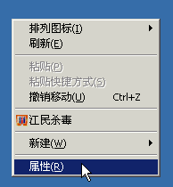
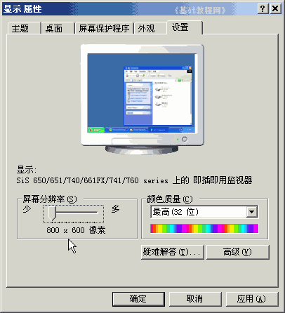
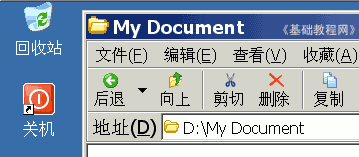
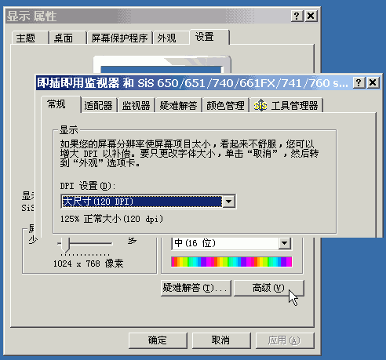
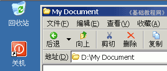
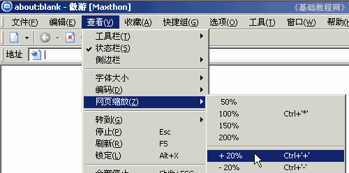
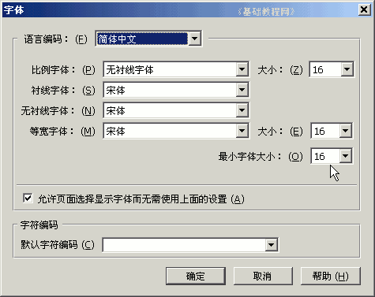

；
；电脑操作基础
作者：TeliuTe 来源：基础教程网
三十八、放大字体 返回目录 下一课如果你想调大显示的字体，可以通过设置桌面，浏览器和显示属性来实现，下面我们来看一个练习；
1、设置分辨率
1）在桌面空白处点右键，选“属性”命令；
2）在出来的“属性”面板上边，点“设置”标签，将下边的分辨率往左拖动设小些；
然后点“应用”按钮，稍等出来一个提示，点“是”保留即可；

2、桌面和窗口字体
1）在显示面板上，点“外观”标签，再在下面的“字体大小”中，选择“特大”；
；
3）这时窗口和桌面的文字字体都会变很大，

4）点上面的“设置”标签，然后再右下角点“高级”进入高级面板，找到“常规”中间的DPI设置；

5）点击“正常尺寸”选择较大的“大尺寸120 DPI”，提示可能要插入安装盘和重启动，
确定后稍等一会，桌面和窗口字体也会变大了；

3、浏览器网页字体
1）在傲游或火狐浏览器的“查看”菜单里，有一个“网页缩放”项，进入后选择放大即可；

2）在火狐中，还可以点菜单“工具-选项-内容-高级”，可以设置最小字体，从而放大页面的文字内容；

本节学习了在Windows XP中放大字体的基本操作，如果你成功地完成了练习，请继续学习下一课内容；本教程由86团学校TeliuTe制作|著作权所有，商业用途请与作者联系
基础教程网：http://teliute.org/
美丽的校园……
转载和引用本站内容，请保留作者和本站链接。